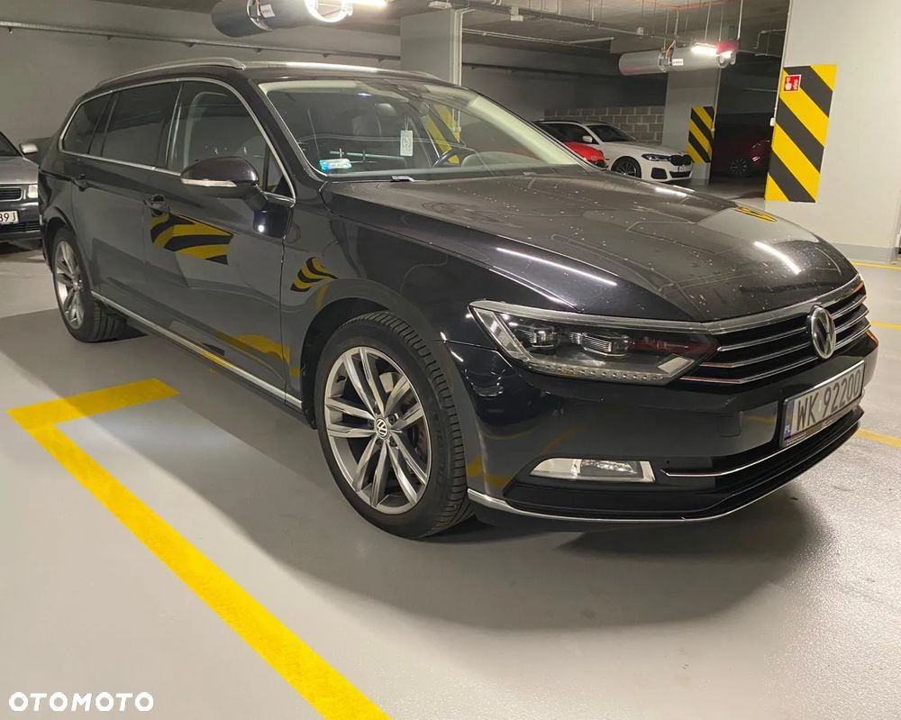
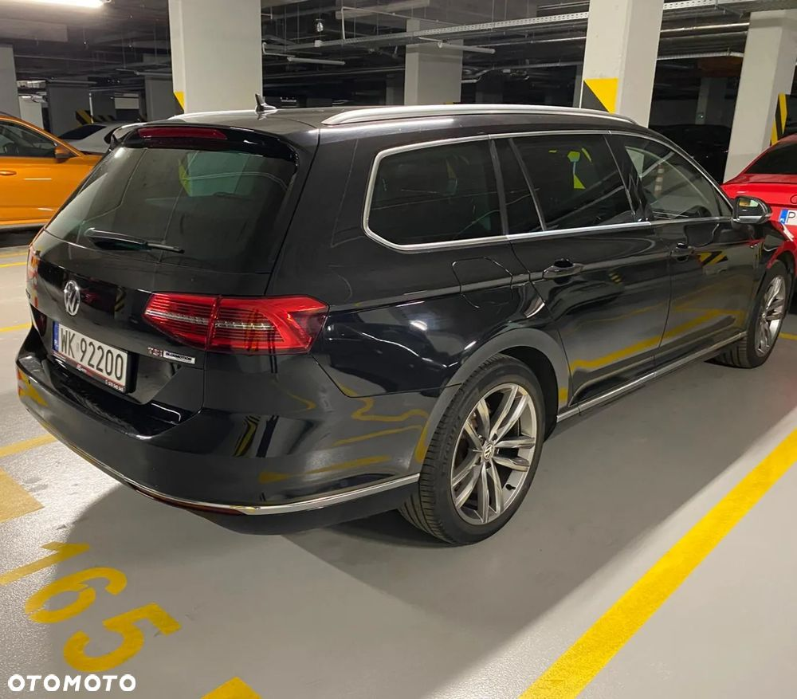
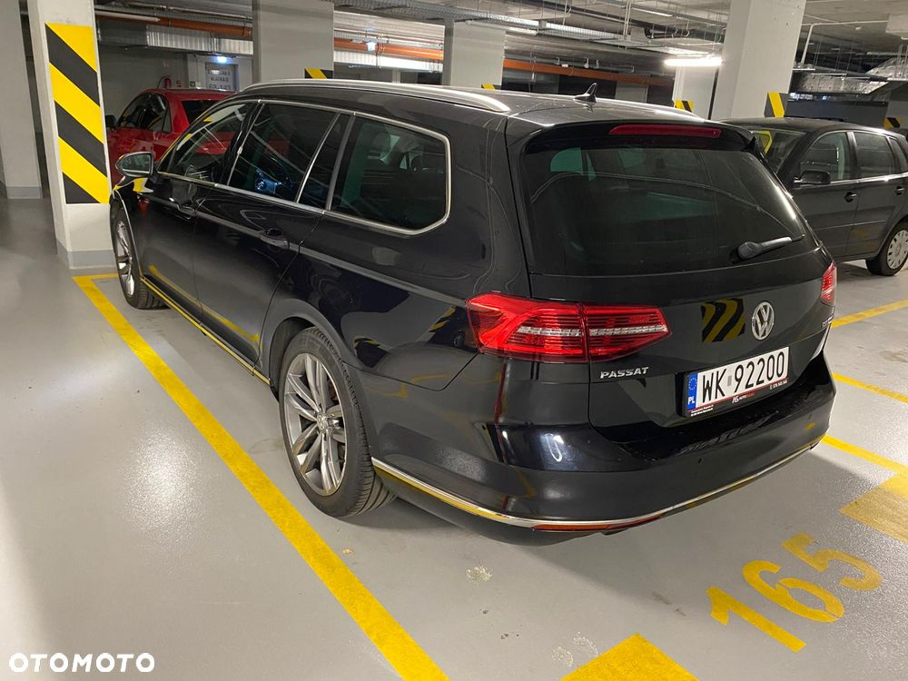
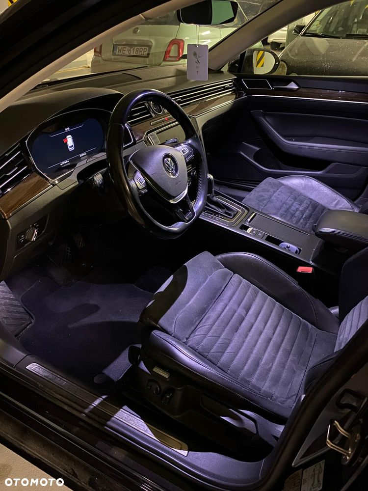
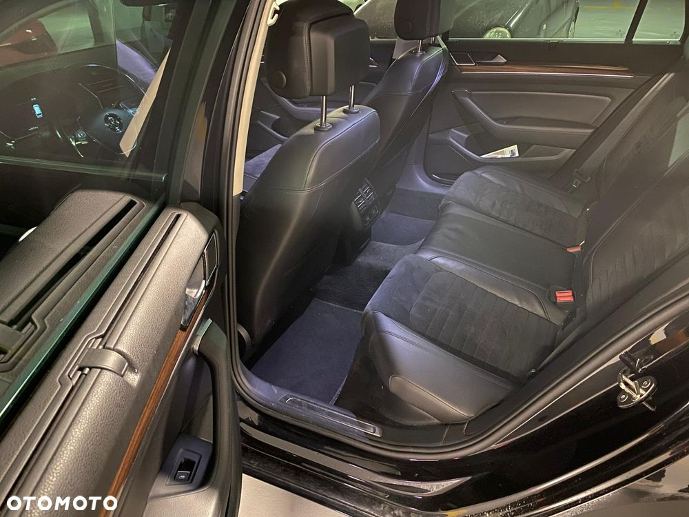
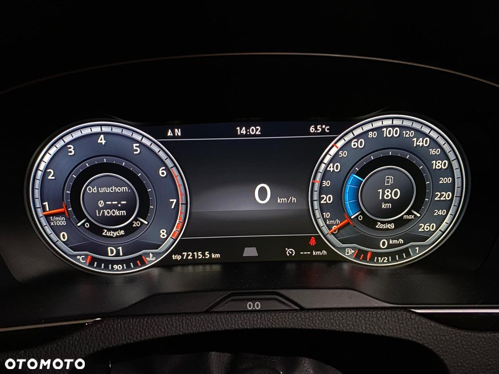
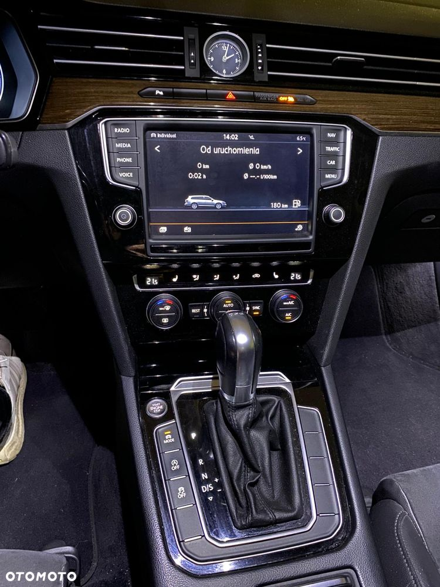
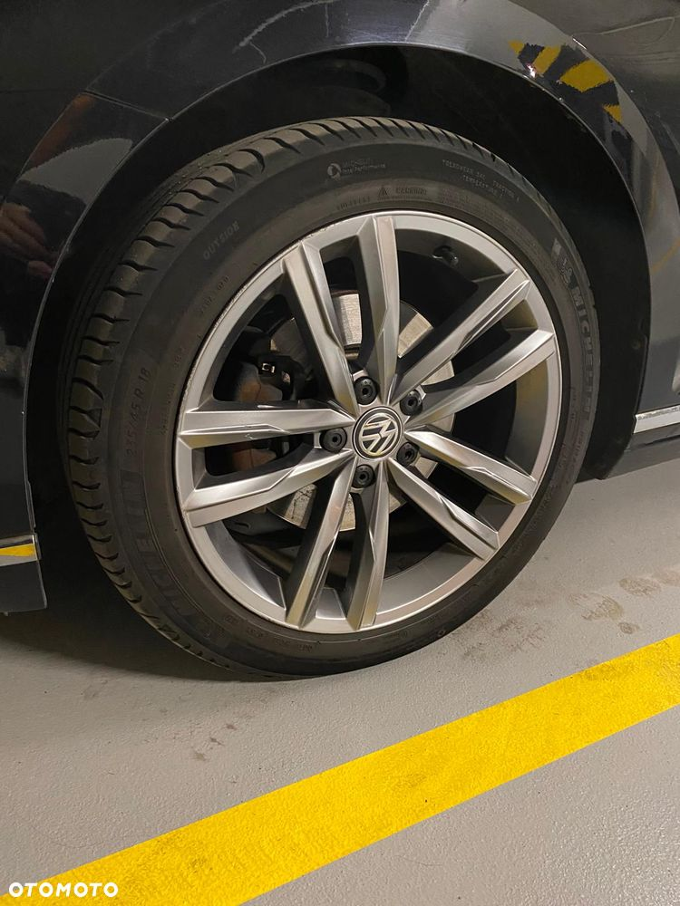

Sprzedaję swoj prywatny samochód. Zakupiony w polskim salonie w 2017, w moich rękach od dwóch lat. Sprzedaję bo od paru miesięcy praktycznie stoi, bo jego miejsce zajął samochód służbowy.
Bardzo bogato wyposażony, reflektory matrix, virtual kokpit, duży wyświetlacz, fotele skóra/alkantara podgrzewane, dekory elegance itp.
Ważna informacja dla zainteresowanego - rok temu zlecałem remont skrzyni, wymienione praktyczne wszystko, rachunek na 10700zł. Ostatnio wyjechałem go przepalić i mam wrażenie że 2 i wstrzeczny bieg poszarpują. Czekam na wolny termin , żeby gwarancyjne sprawdzić co się dzieje. Stąd zaniżona cena, gwarancja przechodzi oczywiście wraz z samochodem na kupującego.
Do wymiany będą pewnie też klocki, chyba że się dotrą po przejechaniu jakiegoś dystansu, bo tak jak pisałem samochód stoi od conajmniej 4 miesięcy.
Pobór oleju 1 litr na 10tyś/km (od wymiany do wymiany). Poprzedni właściciel miał taki pobór podobno od nowości.
Uczciwy samochód, w dobrym stanie. Wnętrze bardzo ładnie zachowane. Zapraszam do kontaktu.
